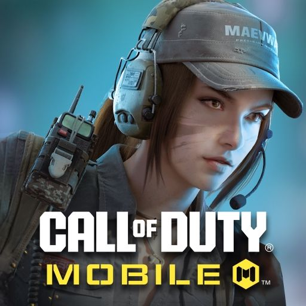

Historia
Call of Duty fue lanzado en 2003 por Activision, desarrollado inicialmente por Infinity Ward. La serie comenzó enfocándose en la Segunda Guerra Mundial, ofreciendo una experiencia de juego inmersiva y realista que se diferenciaba de otros títulos de la época, como Medal of Honor. Con el tiempo, la franquicia se expandió a otros conflictos, incluyendo guerras contemporáneas y escenarios futuristas.

/
Modos de juego
Multijugador: La mayoría de los títulos de Call of Duty ofrecen modos multijugador competitivos, donde los jugadores pueden enfrentarse en diferentes mapas y modos de juego, como Team Deathmatch y Domination.
Campaña: Cada juego generalmente incluye una campaña para un solo jugador que narra una historia a través de misiones.
Zombis: Muchos títulos, especialmente en la serie Black Ops, incluyen un modo cooperativo de Zombis, donde los jugadores luchan contra hordas de enemigos no muertos.
Battle Royale: Call of Duty: Warzone es un ejemplo de un juego gratuito de battle royale que permite a los jugadores competir en grandes mapas con hasta 150 jugadores.
signos en nuestras redes